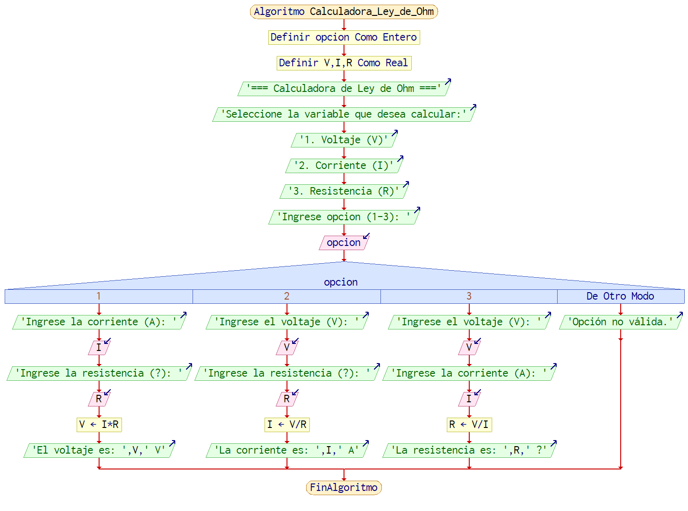

Explicación Teórica

La Ley de Ohm es un principio fundamental de la electricidad que describe la relación entre voltaje (V), corriente (I) y resistencia (R) en un circuito eléctrico. Fue formulada por el físico alemán Georg Simon Ohm en 1827.
Esta ley establece que la corriente que circula por un conductor es directamente proporcional al voltaje aplicado e inversamente proporcional a la resistencia del conductor.
- Voltaje (V): Fuerza eléctrica que impulsa el movimiento de electrones a través del circuito.
- Corriente (I): Flujo de electrones que pasa por un conductor.
- Resistencia (R): Oposición que ofrece un material al paso de la corriente eléctrica.
Las fórmulas básicas derivadas de la Ley de Ohm son:
- Voltaje: V = I × R
- Corriente: I = V / R
- Resistencia: R = V / I
La Ley de Ohm es ampliamente utilizada en electrónica, mecatrónica e ingeniería eléctrica para calcular cualquiera de estas tres variables si se conocen las otras dos. Permite diseñar circuitos seguros y eficientes, seleccionar resistencias correctas y prever el comportamiento de los dispositivos eléctricos.
Calculadora de la Ley de Ohm
Solución
Diagrama de flujo
Pseudocódigo
Proceso Calculadora_Ley_de_Ohm
Definir opcion Como Entero
Definir V, I, R Como Real
Escribir "=== Calculadora de Ley de Ohm ==="
Escribir "Seleccione la variable que desea calcular:"
Escribir "1. Voltaje (V)"
Escribir "2. Corriente (I)"
Escribir "3. Resistencia (R)"
Escribir "Ingrese opcion (1-3): "
Leer opcion
Segun opcion Hacer
1:
Escribir "Ingrese la corriente (A): "
Leer I
Escribir "Ingrese la resistencia (?): "
Leer R
V <- I * R
Escribir "El voltaje es: ", V, " V"
2:
Escribir "Ingrese el voltaje (V): "
Leer V
Escribir "Ingrese la resistencia (?): "
Leer R
I <- V / R
Escribir "La corriente es: ", I, " A"
3:
Escribir "Ingrese el voltaje (V): "
Leer V
Escribir "Ingrese la corriente (A): "
Leer I
R <- V / I
Escribir "La resistencia es: ", R, " ?"
De Otro Modo:
Escribir "Opción no válida."
FinSegun
FinProceso
Código fuente (C++)
#includeusing namespace std; int main() { int opcion; float V, I, R; cout << "=== Calculadora de Ley de Ohm ===" << endl; cout << "Seleccione la variable que desea calcular:" << endl; cout << "1. Voltaje (V)" << endl; cout << "2. Corriente (I)" << endl; cout << "3. Resistencia (R)" << endl; cout << "Ingrese opcion (1-3): "; cin >> opcion; switch(opcion) { case 1: // Voltaje cout << "Ingrese la corriente (A): "; cin >> I; cout << "Ingrese la resistencia (Ohmios): "; cin >> R; V = I * R; cout << "El voltaje es: " << V << " V" << endl; break; case 2: // Corriente cout << "Ingrese el voltaje (V): "; cin >> V; cout << "Ingrese la resistencia (Ohmios): "; cin >> R; I = V / R; cout << "La corriente es: " << I << " A" << endl; break; case 3: // Resistencia cout << "Ingrese el voltaje (V): "; cin >> V; cout << "Ingrese la corriente (A): "; cin >> I; R = V / I; cout << "La resistencia es: " << R << " Ohmios" << endl; break; default: cout << "Opcion no valida." << endl; } return 0; }
Prueba de escritorio
Aprende más sobre Georg Simon Ohm
Nombre completo: Georg Simon Ohm
Nacimiento: 16 de marzo de 1789, Erlangen, Alemania
Fallecimiento: 6 de julio de 1854, Munich, Alemania
Conocido por: Formular la Ley de Ohm, que establece la relación entre voltaje, corriente y resistencia en los circuitos eléctricos.
Formación: Estudió en la Universidad de Erlangen y fue profesor de matemáticas y física en varios institutos técnicos de Alemania.
Curiosidades:
- Su trabajo fue inicialmente rechazado por la comunidad científica, pero más tarde fue reconocido y premiado.
- Recibió la medalla Copley de la Royal Society de Londres en 1841 por su investigación en electricidad.
- Su nombre fue dado a la unidad de resistencia eléctrica, el ohmio (Ω).
Referencias
- Electricity‑Magnetism. (s. f.). Ley de Ohm: Explicación, fórmula y uso. Recuperado de: https://www.electricity-magnetism.org/es/ley-de-ohm-explicacion-formula-y-uso/